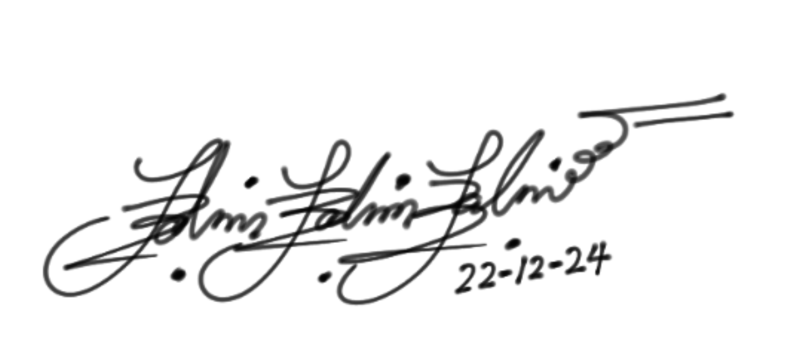

📰
FEATURED ON BIOBOOST+
As part of my phd program, I will be part of the EU project titled BioBoost+. My contribution to the project was featured on the BioBoost+ website. Working on Species Image Recognition.
A PhD candidate at the University of Pisa's Department of Biology. My doctorate research focuses on using innovative techniques (Artificial Intelligence & Remote Sensing) to evaluate biodiversity stability in complex marine environments. Passionate about marine biology, I aim to advance our understanding and conservation of marine ecosystems using emerging tech.

Marine biologist and researcher with expertise in Coastal and Marine Biology, fisheries, aquaculture, and marine ecology. Skilled in quantitative ecology, community dynamics, climate change, and conservation. Experienced in data analysis, visualization, and programming (Python, R), as well as laboratory and field research. Recognized for academic excellence and dedicated to advancing marine science and environmental sustainability.
Download CVBachelor of Fisheries and Aquaculture
Best Graduating Student of Fisheries and Aquaculture Department, 2018/2019
Master's in Coastal & Marine Biology and Ecology
Awarded the prestigious Unisalento4Talents Scholarship
Grade: 110/110
Doctor of Philosophy in Biological
Understanding biodiversity in complex marine environments using emerging sensing technologies
Funded by:BioEcoOcean
As part of my phd program, I will be part of the EU project titled BioBoost+. My contribution to the project was featured on the BioBoost+ website. Working on Species Image Recognition.
As part of my phd program, I am part of the EU Horizon project titled BioEcoOcean. The Consortium held its biannual meeting online on November 18-19, 2024.
The goal of this PhD is to understand ecosystem stability using emerging AI imaging techniques and advanced sensor technologies.
Continuously improving my coding skills and developing research tools. All code is made publicly available on my GitHub account for transparency and collaboration.
Developed tools and applications for marine research and data analysis
Developing advanced AI models for automated species identification in marine imagery. Part of the BioBoost+ project, this tool improves species recognition accuracy for biodiversity monitoring.
A comprehensive toolkit for analyzing complex marine ecological data. Includes statistical models, visualization functions, and utilities for ecosystem stability assessment.
Automated pipeline for processing satellite and remote sensing data for coastal monitoring. Enables real-time tracking of marine biodiversity changes using emerging technologies.
Interactive web dashboard for visualizing marine biodiversity metrics and ecosystem health indicators. Built with modern web technologies for accessible data exploration.
Simulation models for assessing climate change impacts on marine ecosystems. Integrates ecological and oceanographic data for predictive analysis.
This website showcasing my PhD journey, research projects, and technical skills. Built with HTML5, CSS3, and vanilla JavaScript for optimal performance.
0 Days 0 Hrs 0 Min 0 Secs
As a marine ecologist and PhD researcher, Dolapo is passionate about advancing our understanding of biodiversity resilience and conservation within complex aquatic ecosystems.
His research is Funded by the University of Pisa under the EU Horizon project BioEcoOcean.
